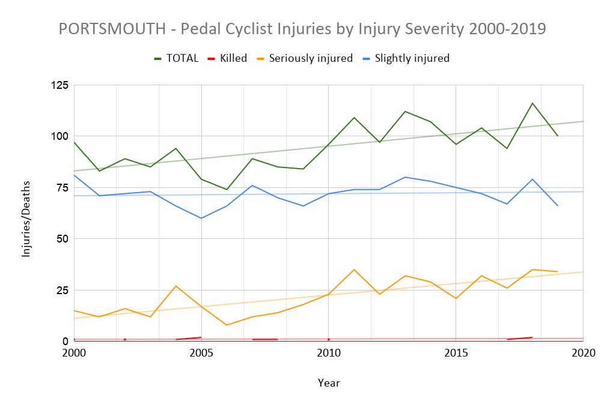

Is there really anything new to be said about 2020? A global pandemic irrevocably shaped the year on so many fronts. Cycle campaigning - although not important in the grand scheme of world events was inevitably one of them. For us in the committee of PCF it ended up being a much busier year than any of us expected…..
We had arranged a members’ social evening at the Wave Maiden in early December 2019. The idea was for members to meet the committee, discuss cycling in the city and kick around ideas as to what they would like to see us do over the next year. We came away with the intention to run more in-person events around actual cycling activity rather than just talking about it. These included:
- Guided rides on specific routes to highlight issues and concerns
- Tour de Ward events where residents and councillors would be invited to discuss the issues they face cycling in their local area.
- Family Rides to develop confidence navigating the city
- Buddy Scheme to give more focussed support to people starting or returning to cycling in the city.
And thus, armed with those thoughts we reached the new year…..
January
- The depths of winter sees a call for information about a string of collisions involving cyclists on the city’s roads, including a fatal one on Portsdown hill.
- The annual Glow Ride - postponed from October due to bad weather is cancelled, again through bad weather, although confirmation of the intention to run it in October 2020...
February
- UK Govt announced a £5bn funding pot for buses and bikes - although cycling only receives one fifth of that for all of England. To put that in context, the Prime Minister when Mayor of London revealed a £1bn fund for the development of the cycle superhighways & the recently released plans for Manchester’s Beeline network was priced at £1.5bn. UK road network gets 27bn for upgrades.
- Next stage of coastal defences along the north-east coast of Portsea Island gets the go ahead. PCF has to clarify that the path will be wide enough for people choosing to walk and cycle along the coastline.
- Proposed PCC budget includes money for Bike Hanger trials in eight locations throughout the city, as well as funds to introduce a segregated cycle lane to Goldsmith Avenue - which would be the first of its kind in the city.
March
- Coronovirus hits the UK and knocks everything for six when the country locks down and has to socially distance from the middle of the month as well as postponing local council and police and crime commissioner elections
- Proposed PCF in person events cancelled, including the recently arranged Portsmouth South Constituency ride with Stephen Morgan MP.
- Bike shops are deemed to be essential services as the Government requests people to walk and cycle more instead of using public transport and to ensure public undertake regular exercise.
- Eastern Road water bridge needs a sewage pipe fixing, resulting in the closure of the shared path and inside lane of the road.
April
- As lockdown continues, traffic levels have dropped considerably while the number of people cycling increases massively, assisted by the good weather that arrived at the same time as the lockdown.
- With less motor vehicle traffic on the road, the drop in air pollution levels in the city is amongst the highest in England. However with more space on the roads, the traffic that remains travels faster, and so still endangers cyclists.
- As a result of increased cycling levels, many cities start to create pop-up protected lanes to help protect vulnerable road users.
- Portsmouth City Council announces the closure of two sections of seafront roads to enable more space for people to practice social distancing while undertaking their regular exercising. Initially closed for the May Bank Holiday weekend.
May
- UK Govt announces money to support such measures under the Emergency Active Travel Fund as a once in a generation chance to change the country for the better.
- You can read more about the EATF from committee member Tim Pickering here.
- Seafront closures were made seven days a week for the foreseeable future later in the month in lieu of securing funding from Govt.
- Additionally Charlotte Street, Isambard Brunel Road and Guildhall Walk are closed to through traffic to create space for cycling and social distancing.
- The council contacted PCF with a proposal to close one lane of Eastern Road to traffic in order to create space for a dedicated cycle lane as cycle counts record that cycle journeys on the existing path had increased by 125% since lockdown.
- We added our thoughts about what would be needed to allow it to be safe, including a reduction of speed limit dependent on what type of cycle lane protection was being allowed for, and how access onto / off the existing path would work if cyclists need to use existing crossing points to access other roads (eg Tangier Rd / Burrfields Rd junctions).
- The Pompey Street Space Campaign is formed to lobby the Council to act quickly to transform Portsmouth into a cycling and pedestrian friendly city by launching an online petition that will be presented to a future full council meeting.
- It holds a meeting with the Council to make suggestions on possible schemes for both tranche one and two of EATF funding. Key requests were a route through the centre of the city, adapting the existing Quieter Routes Cycling network into routes that stop through traffic (also known as low traffic Neighbourhoods), and improving the space along the western section of the path at Portsbridge roundabout, highlighting it as a key walking and cycling link on and off the island part of the city that would help create a safer route for key workers still travelling around the city.
June
- PCF finally receives design drawings for the proposed lane closure on Eastern Road on 3rd June. We continued to have concerns with what was proposed, mainly as it appeared to be much more permanent than the pop-up schemes seen elsewhere around the country. There was no protection of the cycle lane but was relying on a drop in the speed limit to replicate conditions found elsewhere in the city and a one metre wide painted buffer. The closed traffic lane would be for south bound cycling only. We examined the designs and wrote up our comments within 24 hours.
- PCC decided to scrap the Eastern Road idea on 4th June.
- As it was to form part of the funding application from EATF money, another scheme had to be identified to take its place in order to fill the funding allocation assigned to the city by the Government and that had an application deadline of 5th June. Enter Elm Grove / Kings Road pop up cycle lane….
- 30th June - PCC awarded £214,000 in first tranche of EATF funding which funds the existing city centre and seafront road closures, as well as the creation of temporary no through traffic routes in Castle Road and Canal Walk, Elm Grove pop-up cycle lanes, Ordnance Row mandatory cycle lane and ‘low traffic neighbourhood’ in Milton around Landguard & Reginald Roads.
July
- Bike Maintenance stands are installed across the city
- Details of tranche 2 of the EATF are released. PCC set prioritization of suggested schemes and how they fit the required criteria. Apply for funding of an upgrade to the Eastern Road route and a section of Lake Road at top of Commercial road.
- Pompey Street Space Campaign petition reaches just over 3000 signatories before it is submitted to the council. It is supported by NHS and public health officials who highlight the benefit of regular exercise and better air quality on everyone’s lives.
- Portsmouth’s Clean Air Zone consultation opens
- Isambard Brunel Road reopened to through traffic
- UK Government released its long-awaited update to guidance for Cycle Infrastructure Design in the form of Local Transport Note 1/20 - referred to as LTN1/20.
- You can read more about the guidance here.
August
- Palmerston Road South is closed to through traffic in order to create space for hospitality businesses to set up tables outside funded by a grant from European Regional Development Fund and not by EATF money.
- PCF has meetings with PCC to input thoughts into the design for the Elm Grove Pop-up cycle lane, trying to ensure that it is as direct and consistent as possible.
- A campaign to re-open the Seafront roads was started due to the impact of motor vehicles using Eastney Parade for access, and parking displacement from the seafront spaces.
- Elm Grove segregated cycle lanes announced with PCC choosing to consult on the final approach with businesses and residents.
September
- Two more roads closed to through traffic funded through the EATF - Castle Road Southsea and Canal Walk. Traders’ association are key for the former to create a safer environment of shopping given the narrowness of the road. The latter acts as a buffer at a tight unsighted corner close to a number of schools in the city, increasing safety for those walking and cycling in the area.
- Council Draft Seafront Masterplan goes out for final consultation. PCF makes a response much in line with our response the previous one which is to fully support the vision, but also highlights that LTN 1/20 had been issued since the draft was written and its requirements should be recognised and implemented where necessary.
- PCC also opens consultation for its draft Local Cycle and Walking Infrastructure Plan which sets the priorities to improve walking and cycling infrastructure, emphasising the need to create an active travel network that encourages city-wide use.
- The LCWIP is discussed in more detail here.
- South East Hampshire Rapid Transit awarded £56million funding from the Transforming Cities Fund. Schemes to be developed include a couple of cycle specific ones as well as ensuring that first and last mile connections to hubs and stops are incorporated. - We hope to invite someone to talk specifically about this project to a future PCF meeting.
October
- The Clean Air Zone consultation closes and a decision is taken to change its size which excludes London Road, Kingston Road Fratton Road & Kingston Crescent
- Committee member Mike Dobson has more details here.
- After public consultation that results in extremely mixed feedback, PCC announced that the trial of the Elm Grove / Kings Road pop-up scheme will be cut in half to three weeks starting in early November.
- PCC Local Transport Strategy consultation launched. It seeks to set the direction for how transport networks are developed for the next 15 years.
- Not to be put in the shade by local government consultations, the Dept for Transport announced two consultations to update the rules of the road and help to protect vulnerable road users.
- The first proposes amending the Highway Code to introduce a hierarchy of road users which ensures that those road users who can do the greatest harm have the greatest responsibility, provide guidance on cyclist priority at junctions and establish guidance on safe passing distances and speeds when overtaking cyclists and horse riders.
- The second is a review to improve safety on pavements for all users including wheelchair users, people with visual impairments, prams or buggies. The main changes being proposed are to extend the London-style ban on pavement parking, make it easier for councils to pass laws to prevent pavement parking and give councils the power to fine offenders as they are unable to do so at present.
November
- After four months of discussing and planning, the Elm Grove / Kings Road pop-up cycle lane scheme is finally installed for its trial of three weeks, and coincides with National Covid Lockdown phase 2.
- No-one is happy with it and PCF position is that what is installed does not represent the scheme that was consulted on in September. It looks like roadworks and a lack of signage to denote that it is a cycle lane. The temporary wands were installed too close to the loading bays and bus stops as well as too close together which restricts where and how cyclists can merge between lane and main carriageway. There also appear to be extra loading bays identified that were not on the drawings, and little enforcement when drivers remove wands to park where they want.
- Tranche 2 of Active Travel Funding (no longer an emergency apparently) is announced by central Government. PCC fails to secure the full amount applied for but is awarded £450,000 to upgrade the Eastern Road path between Airport Service Road and Burrfields Road.
- Annual release of road casualty figures shows that in 2019 Portsmouth remains in the top five cities outside London for cycle casualties. At 740 per million of population, the figures are a long way short of the 2020 of 450 per million target in our City To Share Strategy. Worryingly, serious injuries are rising despite a drop in the overall casualty figures. All the trend lines remain upwards though…

- Unsurprisingly the public feedback to the Elm Grove lanes is overwhelmingly against them and the entire scheme is removed within hours of the decision to do so, without any assessment of those areas where it was protecting the existing cycle infrastructure. PCFs statement on the trial can be found here.
December
- The consultation on Local Transport Plan 4 closes. PCF submits its response.
- You can find out what’s involved here.
- PCC publicly announces its intention to upgrade Eastern Road Path using tranche 2 ATF money including a public consultation to receive feedback on ideas of what is needed along the whole route between Farlington Roundabout and Milton Road / Rodney road junction.
- Our suggestions can be found here.
- Government Future High Streets funding awards announced with PCC winning over three million for each of the Commercial Road and Fratton schemes that were submitted.
- PCF will keep a watching brief on the scheme designs as they develop ensuring that the requirements of cyclists are identified and included.
- Brexit deal finally announced and the lorry triage point is opened at Tipner. PCF feedback leads to extra signage warning drivers of the presence of people walking and cycling in the area as it crosses part of the west side coastal route twice - at Tipner junction of M275 and the International Port entrance itself.
I would like to publicly thank all the City Council officers in the Traffic and Transportation departments for their work during the last year. They started it on alert for a no-deal EU exit in January and have been at full speed reacting to the Covid emergency, changing government priorities and the various implications since last March.
I would also like to thank the members of the PCF committee and additional volunteers for their focussed, quality work involved in reading and commenting on various consultations, guidance and case studies throughout the year in order to continue representing the voice of cyclists throughout the city.
Ian Saunders
PCF Chair
Jan 2021